All content generated by the platform's agents is a deterministic simulation produced by the mock LLM; it is not real model output.
A headless browser drove the console exactly as a user would: signing in as engineer, approver and admin, creating URLs and workflows, executing them, approving or rejecting at the human gates, injecting faults, replanning and reading metrics. Each step below shows the screen and the REST calls the page made (user, method, path, HTTP status, latency). The final steps run every API flow from the browser in one go.
The single-page console is served by the Spring Boot application itself (no separate frontend server). Every API call the page makes is listed in the panel at the bottom.
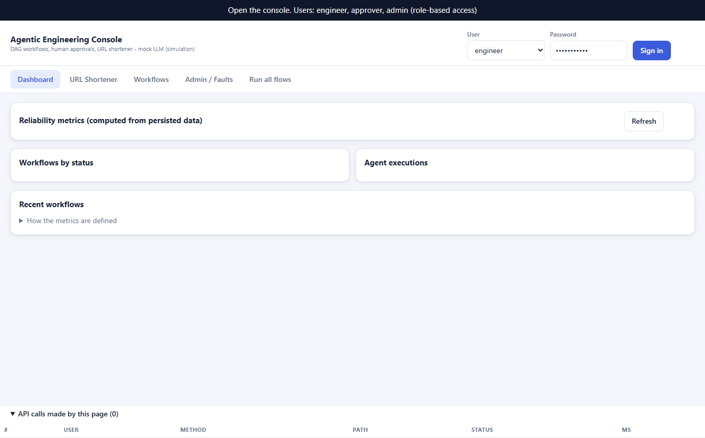
GET /api/v1/whoami identifies the user and roles; the dashboard reads GET /api/v1/metrics/summary. The database is fresh, so all counters start at zero.
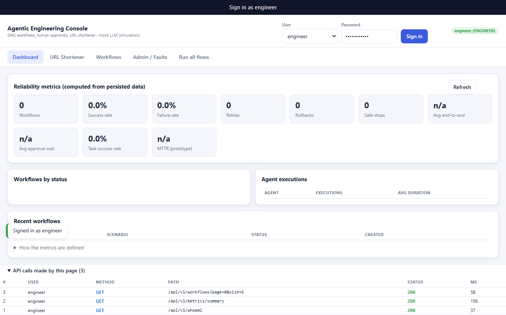
| User | Method | API call | HTTP | ms |
|---|---|---|---|---|
| engineer | GET | /api/v1/whoami | 200 | 37 |
| engineer | GET | /api/v1/metrics/summary | 200 | 156 |
| engineer | GET | /api/v1/workflows?page=0&size=6 | 200 | 58 |
Original URL, optional custom alias and optional expiration date.
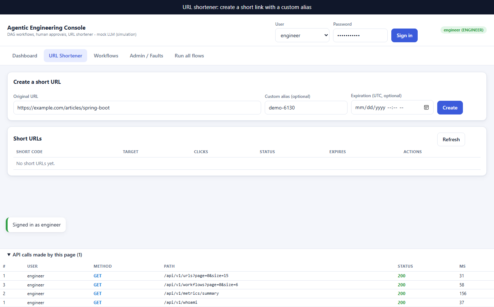
| User | Method | API call | HTTP | ms |
|---|---|---|---|---|
| engineer | GET | /api/v1/urls?page=0&size=15 | 200 | 31 |
POST /api/v1/urls returned 201; GET /api/v1/urls refreshed the table.
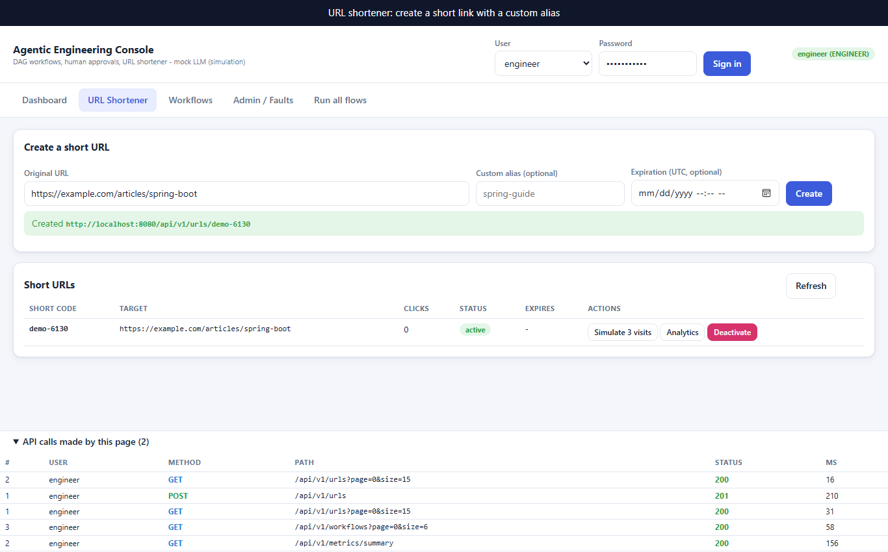
| User | Method | API call | HTTP | ms |
|---|---|---|---|---|
| engineer | POST | /api/v1/urls | 201 | 210 |
| engineer | GET | /api/v1/urls?page=0&size=15 | 200 | 16 |
GET /api/v1/urls/{code} answers 302 (the browser reports it as an opaque redirect). Click count and timestamps are persisted.
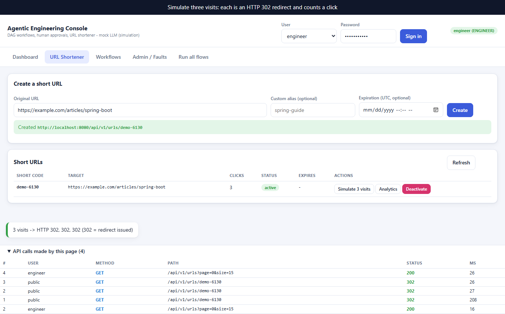
| User | Method | API call | HTTP | ms |
|---|---|---|---|---|
| public | GET | /api/v1/urls/demo-6130 | 302 | 208 |
| public | GET | /api/v1/urls/demo-6130 | 302 | 27 |
| public | GET | /api/v1/urls/demo-6130 | 302 | 26 |
| engineer | GET | /api/v1/urls?page=0&size=15 | 200 | 26 |
GET /api/v1/urls/{code}/analytics: total clicks, first and last access timestamps, referrer statistics and daily click statistics.
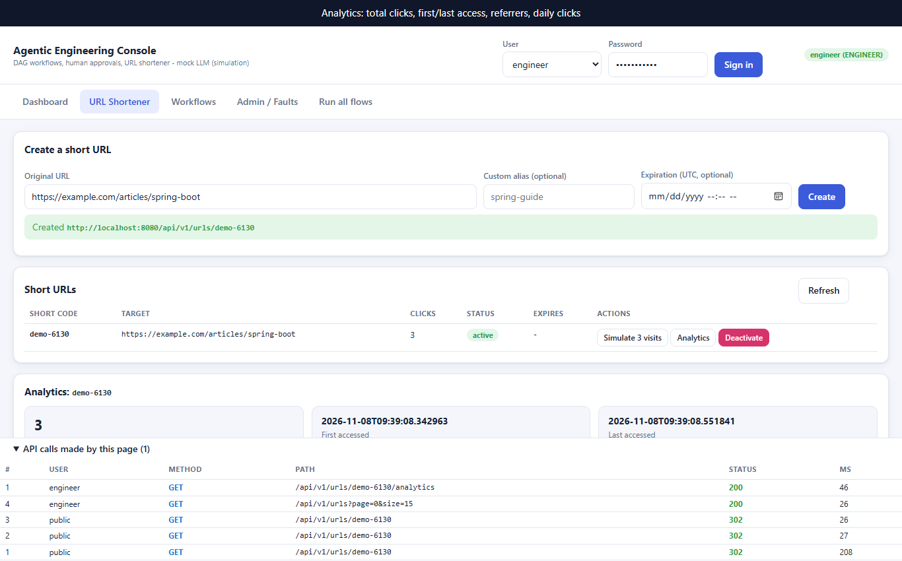
| User | Method | API call | HTTP | ms |
|---|---|---|---|---|
| engineer | GET | /api/v1/urls/demo-6130/analytics | 200 | 46 |
DELETE /api/v1/urls/{code} returned 204 (soft delete); visiting the link now returns 410 Gone.
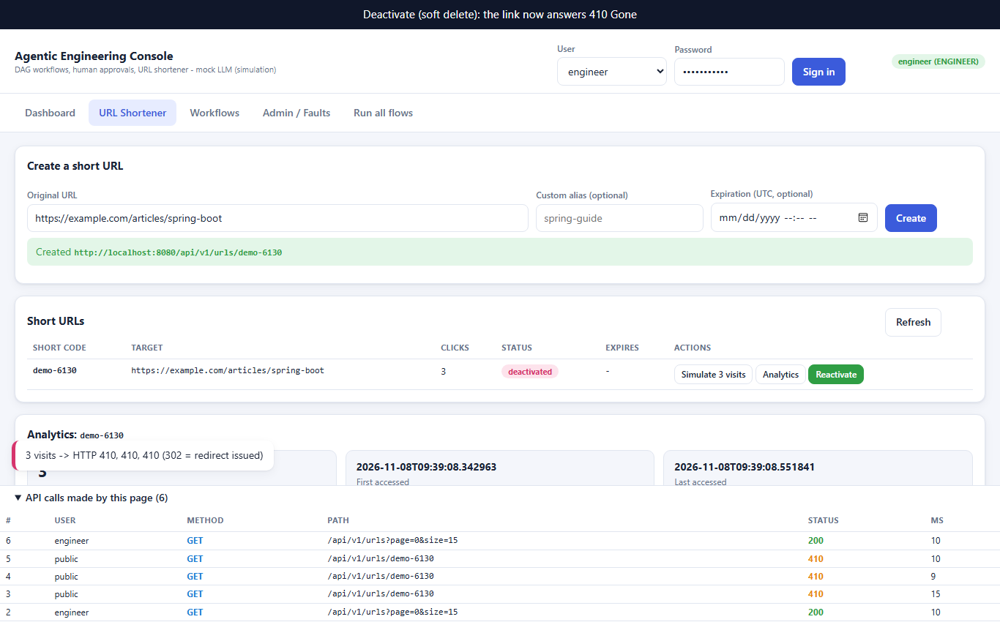
| User | Method | API call | HTTP | ms |
|---|---|---|---|---|
| engineer | DELETE | /api/v1/urls/demo-6130 | 204 | 20 |
| engineer | GET | /api/v1/urls?page=0&size=15 | 200 | 10 |
| public | GET | /api/v1/urls/demo-6130 | 410 | 15 |
| public | GET | /api/v1/urls/demo-6130 | 410 | 9 |
| public | GET | /api/v1/urls/demo-6130 | 410 | 10 |
| engineer | GET | /api/v1/urls?page=0&size=15 | 200 | 10 |
PUT /api/v1/urls/{code}/status {active:true} reactivated the link.
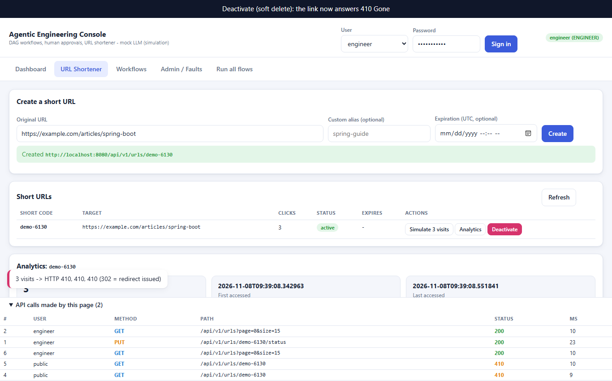
| User | Method | API call | HTTP | ms |
|---|---|---|---|---|
| engineer | PUT | /api/v1/urls/demo-6130/status | 200 | 23 |
| engineer | GET | /api/v1/urls?page=0&size=15 | 200 | 10 |
POST /api/v1/workflows created the workflow with 13 DAG nodes (nothing has run yet). Dashed nodes are human approval gates.
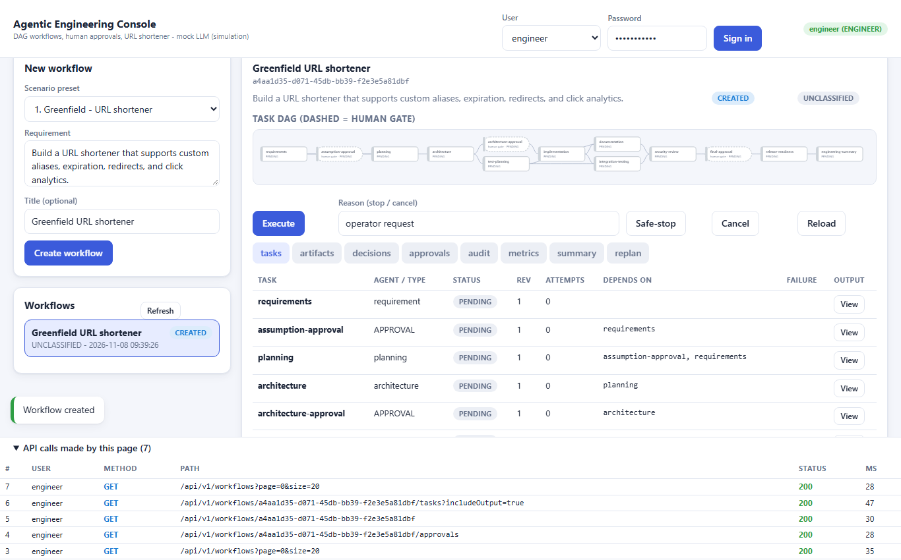
| User | Method | API call | HTTP | ms |
|---|---|---|---|---|
| engineer | GET | /api/v1/workflows?page=0&size=20 | 200 | 21 |
| engineer | POST | /api/v1/workflows | 201 | 471 |
| engineer | GET | /api/v1/workflows?page=0&size=20 | 200 | 35 |
| engineer | GET | /api/v1/workflows/a4aa1d35-d071-45db-bb39-f2e3e5a81dbf/approvals | 200 | 28 |
| engineer | GET | /api/v1/workflows/a4aa1d35-d071-45db-bb39-f2e3e5a81dbf | 200 | 30 |
| engineer | GET | /api/v1/workflows/a4aa1d35-d071-45db-bb39-f2e3e5a81dbf/tasks?includeOutput=true | 200 | 47 |
| engineer | GET | /api/v1/workflows?page=0&size=20 | 200 | 28 |
POST /execute ran requirement, planning, architecture, then implementation and test-planning in parallel, documentation and validation, security review. The workflow paused at the human final approval; the two conditional gates were skipped.
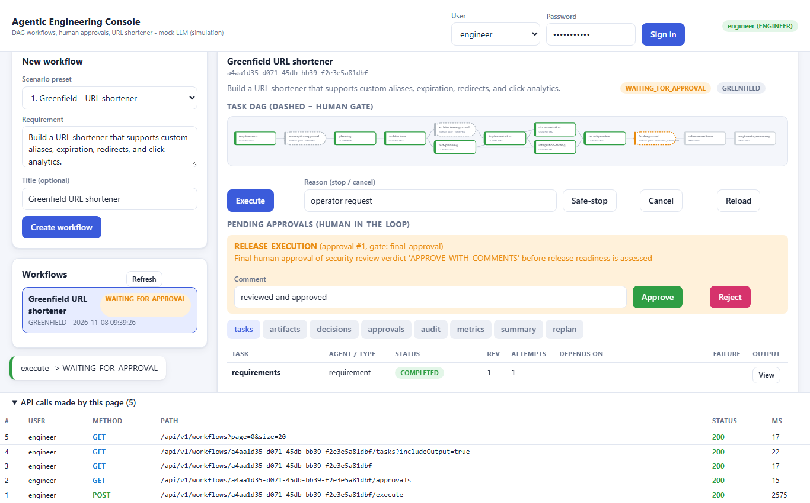
| User | Method | API call | HTTP | ms |
|---|---|---|---|---|
| engineer | POST | /api/v1/workflows/a4aa1d35-d071-45db-bb39-f2e3e5a81dbf/execute | 200 | 2575 |
| engineer | GET | /api/v1/workflows/a4aa1d35-d071-45db-bb39-f2e3e5a81dbf/approvals | 200 | 15 |
| engineer | GET | /api/v1/workflows/a4aa1d35-d071-45db-bb39-f2e3e5a81dbf | 200 | 17 |
| engineer | GET | /api/v1/workflows/a4aa1d35-d071-45db-bb39-f2e3e5a81dbf/tasks?includeOutput=true | 200 | 22 |
| engineer | GET | /api/v1/workflows?page=0&size=20 | 200 | 17 |
The server answered 403 and explains which role is needed. Approvals are enforced by role (APPROVER).
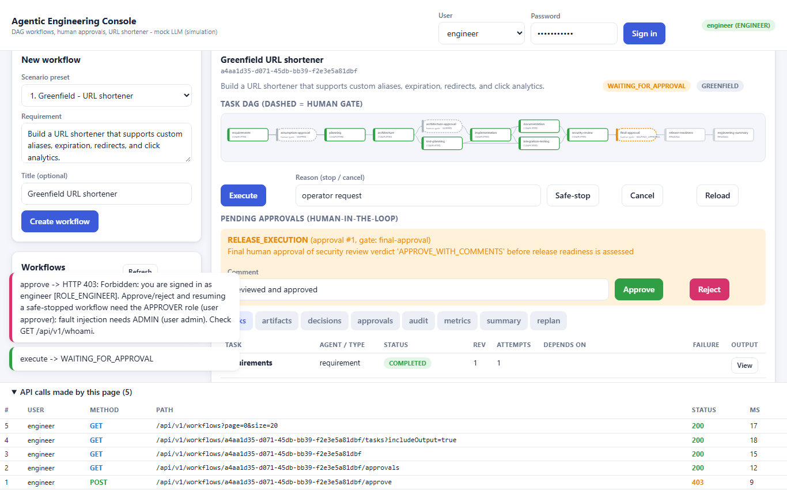
| User | Method | API call | HTTP | ms |
|---|---|---|---|---|
| engineer | POST | /api/v1/workflows/a4aa1d35-d071-45db-bb39-f2e3e5a81dbf/approve | 403 | 9 |
| engineer | GET | /api/v1/workflows/a4aa1d35-d071-45db-bb39-f2e3e5a81dbf/approvals | 200 | 12 |
| engineer | GET | /api/v1/workflows/a4aa1d35-d071-45db-bb39-f2e3e5a81dbf | 200 | 15 |
| engineer | GET | /api/v1/workflows/a4aa1d35-d071-45db-bb39-f2e3e5a81dbf/tasks?includeOutput=true | 200 | 18 |
| engineer | GET | /api/v1/workflows?page=0&size=20 | 200 | 17 |
POST /approve by the approver granted the gate; the workflow resumed and COMPLETED (release readiness and engineering summary).
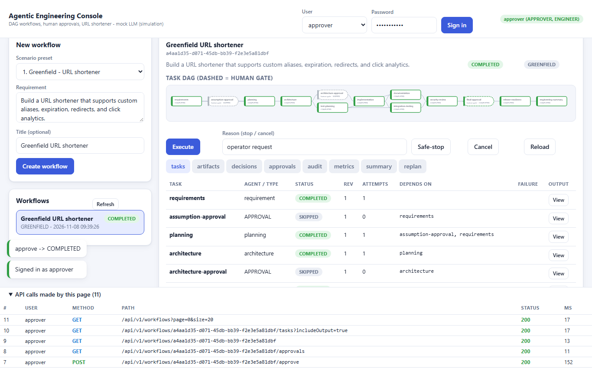
| User | Method | API call | HTTP | ms |
|---|---|---|---|---|
| approver | GET | /api/v1/whoami | 200 | 10 |
| approver | GET | /api/v1/workflows?page=0&size=20 | 200 | 22 |
| approver | GET | /api/v1/workflows/a4aa1d35-d071-45db-bb39-f2e3e5a81dbf/approvals | 200 | 9 |
| approver | GET | /api/v1/workflows/a4aa1d35-d071-45db-bb39-f2e3e5a81dbf | 200 | 14 |
| approver | GET | /api/v1/workflows/a4aa1d35-d071-45db-bb39-f2e3e5a81dbf/tasks?includeOutput=true | 200 | 15 |
| approver | GET | /api/v1/workflows?page=0&size=20 | 200 | 17 |
| approver | POST | /api/v1/workflows/a4aa1d35-d071-45db-bb39-f2e3e5a81dbf/approve | 200 | 152 |
| approver | GET | /api/v1/workflows/a4aa1d35-d071-45db-bb39-f2e3e5a81dbf/approvals | 200 | 11 |
| approver | GET | /api/v1/workflows/a4aa1d35-d071-45db-bb39-f2e3e5a81dbf | 200 | 13 |
| approver | GET | /api/v1/workflows/a4aa1d35-d071-45db-bb39-f2e3e5a81dbf/tasks?includeOutput=true | 200 | 17 |
| approver | GET | /api/v1/workflows?page=0&size=20 | 200 | 17 |
GET /artifacts?includeContent=true: versioned artifacts, all ACCEPTED after final approval; content stored in the approved workspace only.
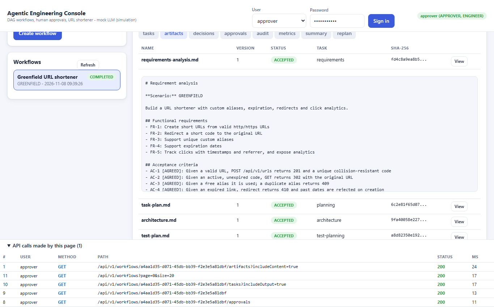
| User | Method | API call | HTTP | ms |
|---|---|---|---|---|
| approver | GET | /api/v1/workflows/a4aa1d35-d071-45db-bb39-f2e3e5a81dbf/artifacts?includeContent=true | 200 | 24 |
GET /decisions: each decision lists the upstream decisions it builds on (Builds on column).
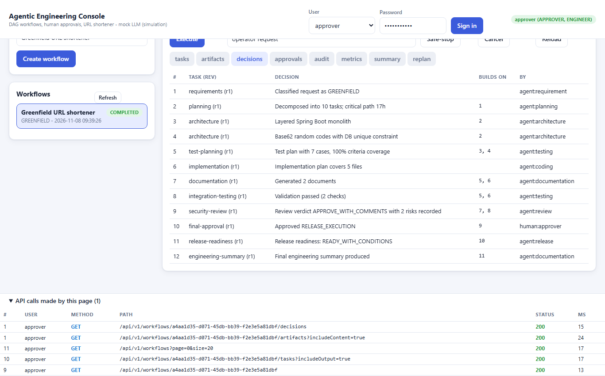
| User | Method | API call | HTTP | ms |
|---|---|---|---|---|
| approver | GET | /api/v1/workflows/a4aa1d35-d071-45db-bb39-f2e3e5a81dbf/decisions | 200 | 15 |
GET /api/v1/audit/workflows/{id}: every sensitive step is recorded (creation, task results, approvals, artifact promotion).
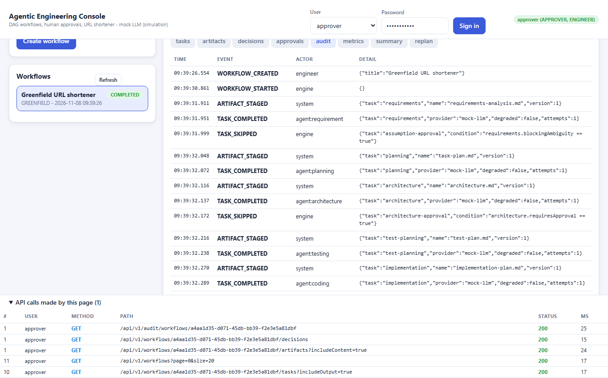
| User | Method | API call | HTTP | ms |
|---|---|---|---|---|
| approver | GET | /api/v1/audit/workflows/a4aa1d35-d071-45db-bb39-f2e3e5a81dbf | 200 | 25 |
GET /api/v1/metrics/workflows/{id}: latency, agent executions, retries, approval wait.
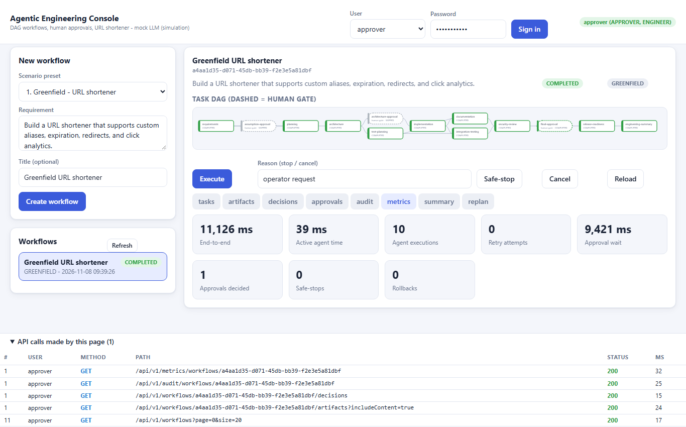
| User | Method | API call | HTTP | ms |
|---|---|---|---|---|
| approver | GET | /api/v1/metrics/workflows/a4aa1d35-d071-45db-bb39-f2e3e5a81dbf | 200 | 32 |
GET /summary: final engineering summary and release readiness. The platform never deploys; it only assesses readiness.
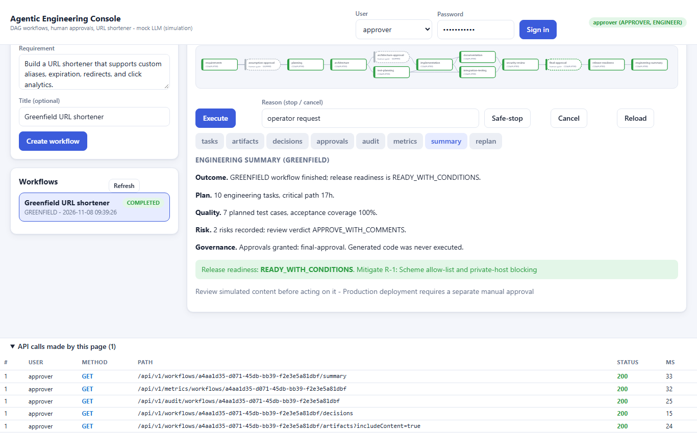
| User | Method | API call | HTTP | ms |
|---|---|---|---|---|
| approver | GET | /api/v1/workflows/a4aa1d35-d071-45db-bb39-f2e3e5a81dbf/summary | 200 | 33 |
Same DAG, different content. The architecture stage first scans the real URL shortener module of this application by reflection.
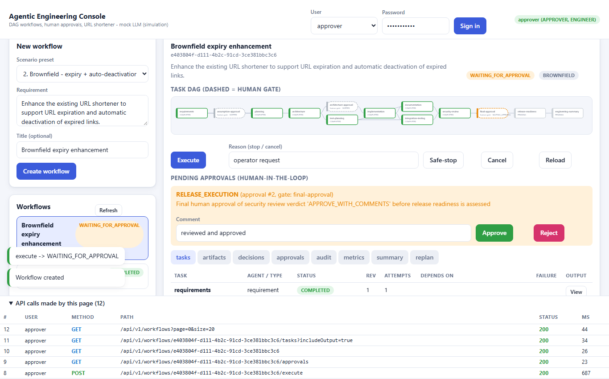
| User | Method | API call | HTTP | ms |
|---|---|---|---|---|
| approver | GET | /api/v1/workflows?page=0&size=20 | 200 | 11 |
| approver | POST | /api/v1/workflows | 201 | 35 |
| approver | GET | /api/v1/workflows?page=0&size=20 | 200 | 22 |
| approver | GET | /api/v1/workflows/e403804f-d111-4b2c-91cd-3ce381bbc3c6/approvals | 200 | 14 |
| approver | GET | /api/v1/workflows/e403804f-d111-4b2c-91cd-3ce381bbc3c6 | 200 | 18 |
| approver | GET | /api/v1/workflows/e403804f-d111-4b2c-91cd-3ce381bbc3c6/tasks?includeOutput=true | 200 | 19 |
| approver | GET | /api/v1/workflows?page=0&size=20 | 200 | 26 |
| approver | POST | /api/v1/workflows/e403804f-d111-4b2c-91cd-3ce381bbc3c6/execute | 200 | 687 |
| approver | GET | /api/v1/workflows/e403804f-d111-4b2c-91cd-3ce381bbc3c6/approvals | 200 | 23 |
| approver | GET | /api/v1/workflows/e403804f-d111-4b2c-91cd-3ce381bbc3c6 | 200 | 26 |
| approver | GET | /api/v1/workflows/e403804f-d111-4b2c-91cd-3ce381bbc3c6/tasks?includeOutput=true | 200 | 34 |
| approver | GET | /api/v1/workflows?page=0&size=20 | 200 | 44 |
Architecture output: impacted APIs, entities, services and repositories discovered from the actual module, existing test discovery and backward-compatibility assessment.
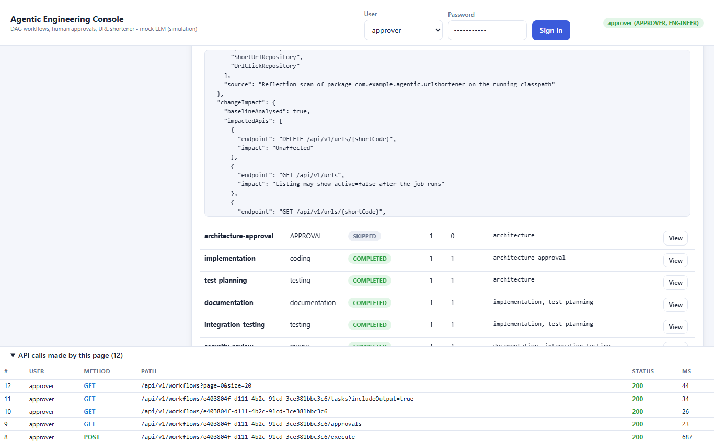
Regression risks and the statement that the change is backward compatible.
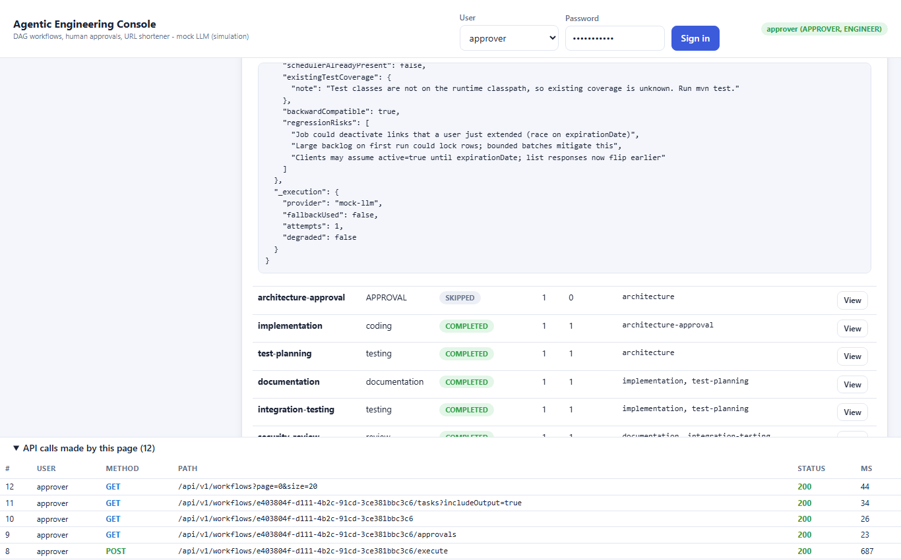
Approved and completed.
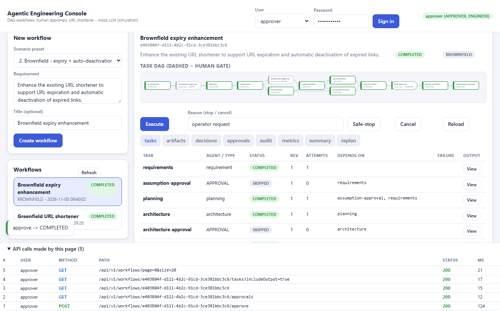
| User | Method | API call | HTTP | ms |
|---|---|---|---|---|
| approver | POST | /api/v1/workflows/e403804f-d111-4b2c-91cd-3ce381bbc3c6/approve | 200 | 124 |
| approver | GET | /api/v1/workflows/e403804f-d111-4b2c-91cd-3ce381bbc3c6/approvals | 200 | 12 |
| approver | GET | /api/v1/workflows/e403804f-d111-4b2c-91cd-3ce381bbc3c6 | 200 | 15 |
| approver | GET | /api/v1/workflows/e403804f-d111-4b2c-91cd-3ce381bbc3c6/tasks?includeOutput=true | 200 | 17 |
| approver | GET | /api/v1/workflows?page=0&size=20 | 200 | 21 |
Blocking ambiguities were found. Planning has NOT started; the workflow waits for a human to approve the provisional assumptions.
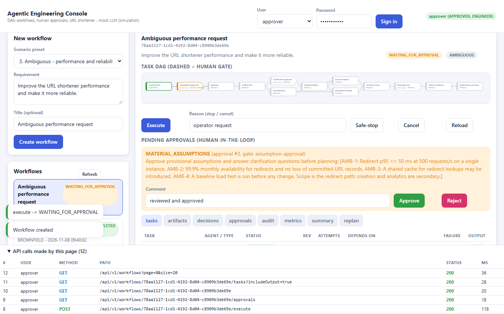
| User | Method | API call | HTTP | ms |
|---|---|---|---|---|
| approver | GET | /api/v1/workflows?page=0&size=20 | 200 | 14 |
| approver | POST | /api/v1/workflows | 201 | 34 |
| approver | GET | /api/v1/workflows?page=0&size=20 | 200 | 22 |
| approver | GET | /api/v1/workflows/78aa1127-1cd1-4192-8d04-c8909b3de69e/approvals | 200 | 10 |
| approver | GET | /api/v1/workflows/78aa1127-1cd1-4192-8d04-c8909b3de69e | 200 | 18 |
| approver | GET | /api/v1/workflows/78aa1127-1cd1-4192-8d04-c8909b3de69e/tasks?includeOutput=true | 200 | 18 |
| approver | GET | /api/v1/workflows?page=0&size=20 | 200 | 32 |
| approver | POST | /api/v1/workflows/78aa1127-1cd1-4192-8d04-c8909b3de69e/execute | 200 | 118 |
| approver | GET | /api/v1/workflows/78aa1127-1cd1-4192-8d04-c8909b3de69e/approvals | 200 | 18 |
| approver | GET | /api/v1/workflows/78aa1127-1cd1-4192-8d04-c8909b3de69e | 200 | 20 |
| approver | GET | /api/v1/workflows/78aa1127-1cd1-4192-8d04-c8909b3de69e/tasks?includeOutput=true | 200 | 28 |
| approver | GET | /api/v1/workflows?page=0&size=20 | 200 | 36 |
Requirements output: clarification questions, provisional assumptions (for example p95 latency and availability targets) and missing information such as baselines.
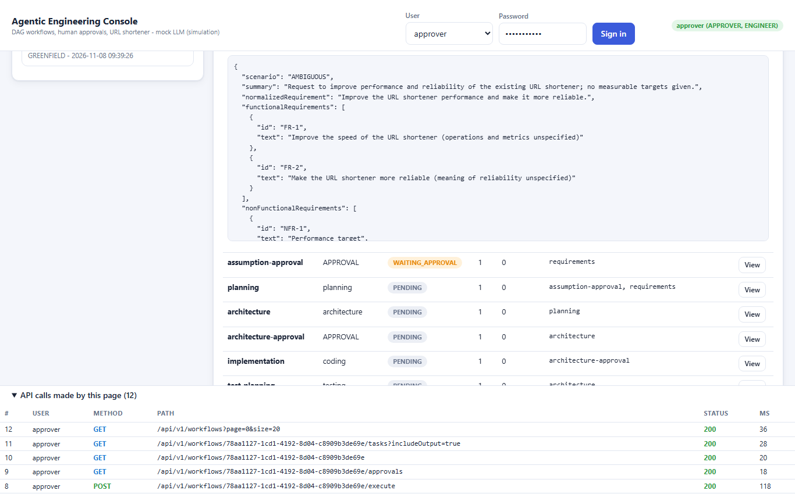
After the assumptions were approved the plan was produced. Introducing a shared cache is a high-impact architecture change, so a second approval is required. test-planning already completed in parallel.
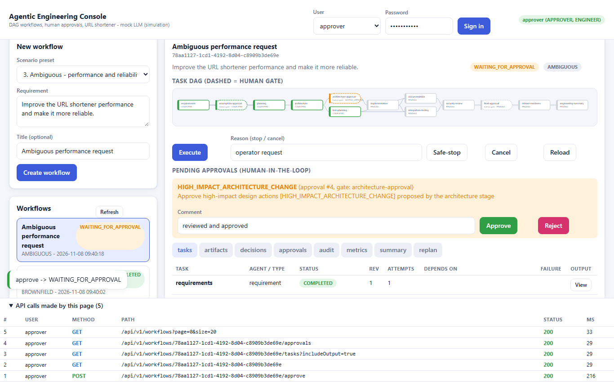
| User | Method | API call | HTTP | ms |
|---|---|---|---|---|
| approver | POST | /api/v1/workflows/78aa1127-1cd1-4192-8d04-c8909b3de69e/approve | 200 | 216 |
| approver | GET | /api/v1/workflows/78aa1127-1cd1-4192-8d04-c8909b3de69e | 200 | 29 |
| approver | GET | /api/v1/workflows/78aa1127-1cd1-4192-8d04-c8909b3de69e/tasks?includeOutput=true | 200 | 29 |
| approver | GET | /api/v1/workflows/78aa1127-1cd1-4192-8d04-c8909b3de69e/approvals | 200 | 29 |
| approver | GET | /api/v1/workflows?page=0&size=20 | 200 | 33 |
Design approved; implementation, documentation, validation and review ran; final release approval pending.
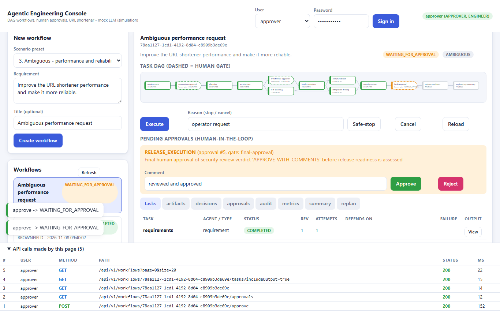
| User | Method | API call | HTTP | ms |
|---|---|---|---|---|
| approver | POST | /api/v1/workflows/78aa1127-1cd1-4192-8d04-c8909b3de69e/approve | 200 | 152 |
| approver | GET | /api/v1/workflows/78aa1127-1cd1-4192-8d04-c8909b3de69e/approvals | 200 | 12 |
| approver | GET | /api/v1/workflows/78aa1127-1cd1-4192-8d04-c8909b3de69e | 200 | 14 |
| approver | GET | /api/v1/workflows/78aa1127-1cd1-4192-8d04-c8909b3de69e/tasks?includeOutput=true | 200 | 15 |
| approver | GET | /api/v1/workflows?page=0&size=20 | 200 | 22 |
Completed after three human approvals. Release readiness is READY_WITH_CONDITIONS because the targets are still provisional.
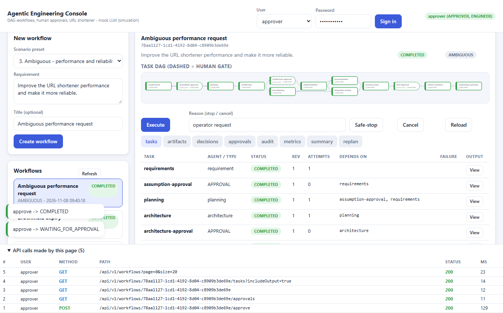
| User | Method | API call | HTTP | ms |
|---|---|---|---|---|
| approver | POST | /api/v1/workflows/78aa1127-1cd1-4192-8d04-c8909b3de69e/approve | 200 | 129 |
| approver | GET | /api/v1/workflows/78aa1127-1cd1-4192-8d04-c8909b3de69e/approvals | 200 | 11 |
| approver | GET | /api/v1/workflows/78aa1127-1cd1-4192-8d04-c8909b3de69e | 200 | 12 |
| approver | GET | /api/v1/workflows/78aa1127-1cd1-4192-8d04-c8909b3de69e/tasks?includeOutput=true | 200 | 14 |
| approver | GET | /api/v1/workflows?page=0&size=20 | 200 | 23 |
POST /reject: the workflow is ROLLED_BACK and its staged artifact versions are reverted (a safe, reversible operation).
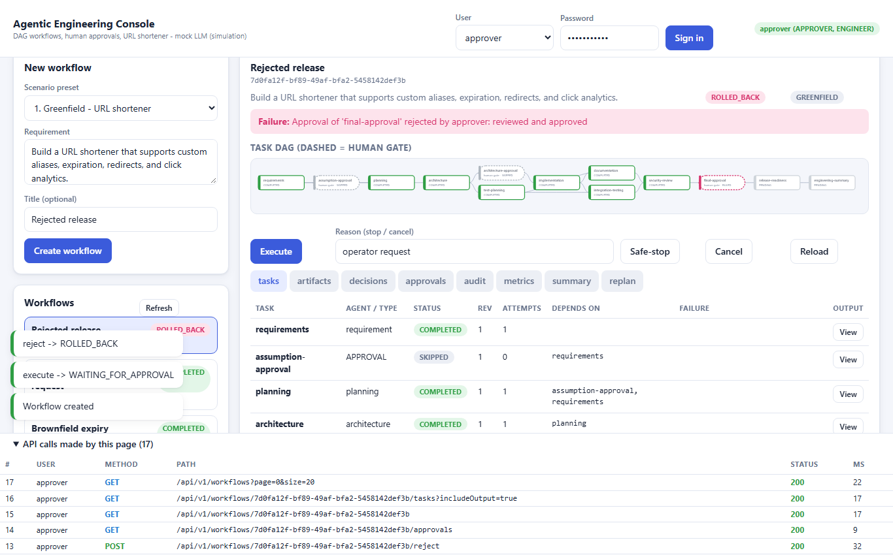
| User | Method | API call | HTTP | ms |
|---|---|---|---|---|
| approver | GET | /api/v1/workflows?page=0&size=20 | 200 | 25 |
| approver | POST | /api/v1/workflows | 201 | 26 |
| approver | GET | /api/v1/workflows?page=0&size=20 | 200 | 19 |
| approver | GET | /api/v1/workflows/7d0fa12f-bf89-49af-bfa2-5458142def3b/approvals | 200 | 13 |
| approver | GET | /api/v1/workflows/7d0fa12f-bf89-49af-bfa2-5458142def3b | 200 | 28 |
| approver | GET | /api/v1/workflows/7d0fa12f-bf89-49af-bfa2-5458142def3b/tasks?includeOutput=true | 200 | 29 |
| approver | GET | /api/v1/workflows?page=0&size=20 | 200 | 23 |
| approver | POST | /api/v1/workflows/7d0fa12f-bf89-49af-bfa2-5458142def3b/execute | 200 | 201 |
| approver | GET | /api/v1/workflows/7d0fa12f-bf89-49af-bfa2-5458142def3b/approvals | 200 | 10 |
| approver | GET | /api/v1/workflows/7d0fa12f-bf89-49af-bfa2-5458142def3b | 200 | 19 |
| approver | GET | /api/v1/workflows/7d0fa12f-bf89-49af-bfa2-5458142def3b/tasks?includeOutput=true | 200 | 20 |
| approver | GET | /api/v1/workflows?page=0&size=20 | 200 | 27 |
| approver | POST | /api/v1/workflows/7d0fa12f-bf89-49af-bfa2-5458142def3b/reject | 200 | 32 |
| approver | GET | /api/v1/workflows/7d0fa12f-bf89-49af-bfa2-5458142def3b/approvals | 200 | 9 |
| approver | GET | /api/v1/workflows/7d0fa12f-bf89-49af-bfa2-5458142def3b | 200 | 17 |
| approver | GET | /api/v1/workflows/7d0fa12f-bf89-49af-bfa2-5458142def3b/tasks?includeOutput=true | 200 | 17 |
All artifacts are REVERTED; nothing was accepted.
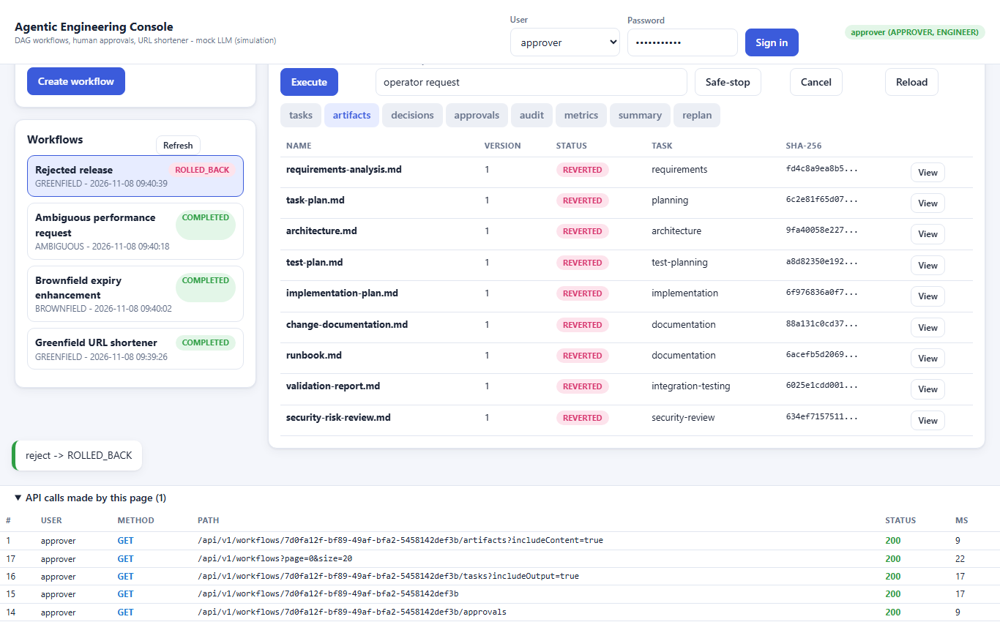
| User | Method | API call | HTTP | ms |
|---|---|---|---|---|
| approver | GET | /api/v1/workflows/7d0fa12f-bf89-49af-bfa2-5458142def3b/artifacts?includeContent=true | 200 | 9 |
The architecture marks a SECURITY_SENSITIVE_CHANGE, which needs a human approval before implementation.
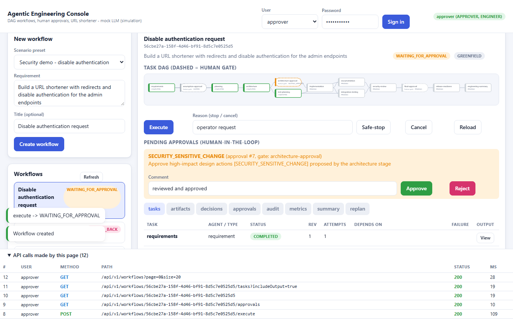
| User | Method | API call | HTTP | ms |
|---|---|---|---|---|
| approver | GET | /api/v1/workflows?page=0&size=20 | 200 | 16 |
| approver | POST | /api/v1/workflows | 201 | 41 |
| approver | GET | /api/v1/workflows?page=0&size=20 | 200 | 33 |
| approver | GET | /api/v1/workflows/56cbe27a-158f-4d46-bf91-8d5c7e0525d5 | 200 | 27 |
| approver | GET | /api/v1/workflows/56cbe27a-158f-4d46-bf91-8d5c7e0525d5/tasks?includeOutput=true | 200 | 27 |
| approver | GET | /api/v1/workflows/56cbe27a-158f-4d46-bf91-8d5c7e0525d5/approvals | 200 | 27 |
| approver | GET | /api/v1/workflows?page=0&size=20 | 200 | 47 |
| approver | POST | /api/v1/workflows/56cbe27a-158f-4d46-bf91-8d5c7e0525d5/execute | 200 | 109 |
| approver | GET | /api/v1/workflows/56cbe27a-158f-4d46-bf91-8d5c7e0525d5/approvals | 200 | 10 |
| approver | GET | /api/v1/workflows/56cbe27a-158f-4d46-bf91-8d5c7e0525d5 | 200 | 19 |
| approver | GET | /api/v1/workflows/56cbe27a-158f-4d46-bf91-8d5c7e0525d5/tasks?includeOutput=true | 200 | 19 |
| approver | GET | /api/v1/workflows?page=0&size=20 | 200 | 28 |
The review stage found a critical security finding and the workflow stopped (SAFE_STOPPED, SECURITY_CONCERN). The reason is persisted; nothing downstream ran.
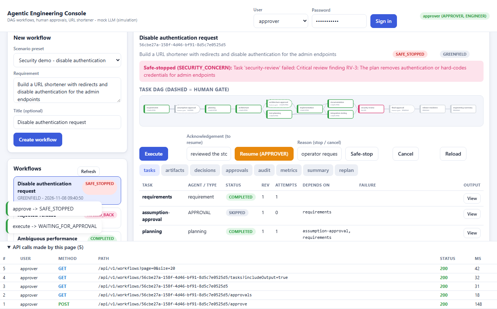
| User | Method | API call | HTTP | ms |
|---|---|---|---|---|
| approver | POST | /api/v1/workflows/56cbe27a-158f-4d46-bf91-8d5c7e0525d5/approve | 200 | 148 |
| approver | GET | /api/v1/workflows/56cbe27a-158f-4d46-bf91-8d5c7e0525d5/approvals | 200 | 18 |
| approver | GET | /api/v1/workflows/56cbe27a-158f-4d46-bf91-8d5c7e0525d5 | 200 | 31 |
| approver | GET | /api/v1/workflows/56cbe27a-158f-4d46-bf91-8d5c7e0525d5/tasks?includeOutput=true | 200 | 32 |
| approver | GET | /api/v1/workflows?page=0&size=20 | 200 | 42 |
Resuming a safe-stopped workflow requires the APPROVER role and an acknowledgement.
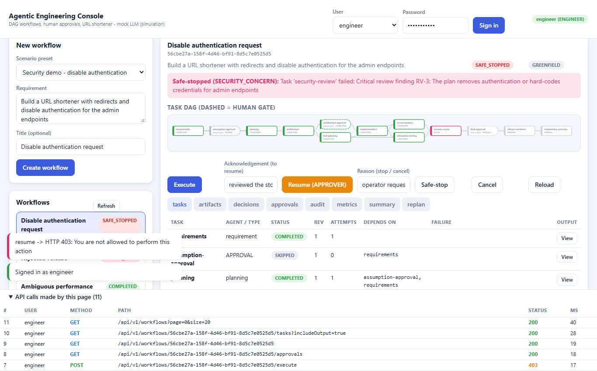
| User | Method | API call | HTTP | ms |
|---|---|---|---|---|
| engineer | GET | /api/v1/whoami | 200 | 5 |
| engineer | GET | /api/v1/workflows?page=0&size=20 | 200 | 18 |
| engineer | GET | /api/v1/workflows/56cbe27a-158f-4d46-bf91-8d5c7e0525d5/approvals | 200 | 9 |
| engineer | GET | /api/v1/workflows/56cbe27a-158f-4d46-bf91-8d5c7e0525d5 | 200 | 14 |
| engineer | GET | /api/v1/workflows/56cbe27a-158f-4d46-bf91-8d5c7e0525d5/tasks?includeOutput=true | 200 | 14 |
| engineer | GET | /api/v1/workflows?page=0&size=20 | 200 | 23 |
| engineer | POST | /api/v1/workflows/56cbe27a-158f-4d46-bf91-8d5c7e0525d5/execute | 403 | 17 |
| engineer | GET | /api/v1/workflows/56cbe27a-158f-4d46-bf91-8d5c7e0525d5/approvals | 200 | 18 |
| engineer | GET | /api/v1/workflows/56cbe27a-158f-4d46-bf91-8d5c7e0525d5 | 200 | 19 |
| engineer | GET | /api/v1/workflows/56cbe27a-158f-4d46-bf91-8d5c7e0525d5/tasks?includeOutput=true | 200 | 28 |
| engineer | GET | /api/v1/workflows?page=0&size=20 | 200 | 40 |
The approver resumed with an acknowledgement; the same policy violation stops it again, proving the guard cannot be bypassed.
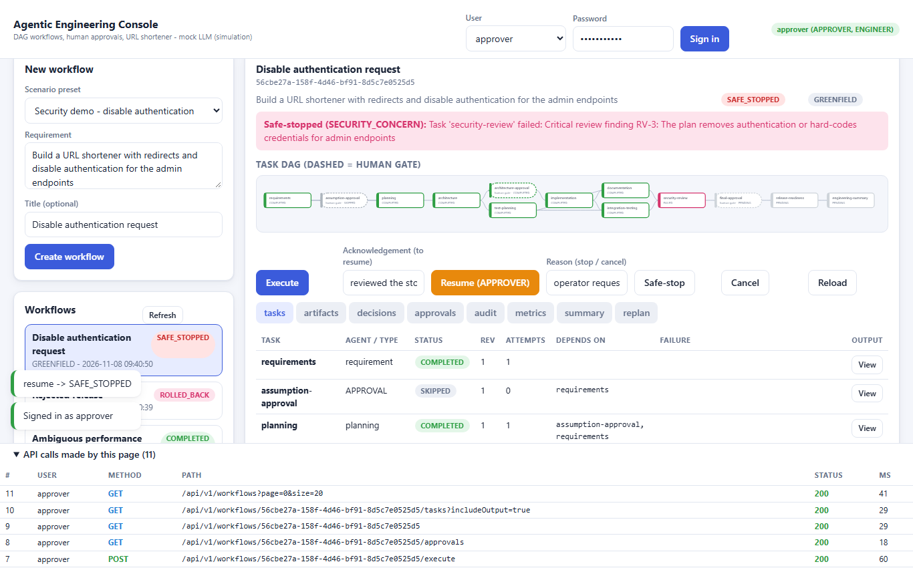
| User | Method | API call | HTTP | ms |
|---|---|---|---|---|
| approver | GET | /api/v1/whoami | 200 | 5 |
| approver | GET | /api/v1/workflows?page=0&size=20 | 200 | 16 |
| approver | GET | /api/v1/workflows/56cbe27a-158f-4d46-bf91-8d5c7e0525d5/approvals | 200 | 17 |
| approver | GET | /api/v1/workflows/56cbe27a-158f-4d46-bf91-8d5c7e0525d5 | 200 | 27 |
| approver | GET | /api/v1/workflows/56cbe27a-158f-4d46-bf91-8d5c7e0525d5/tasks?includeOutput=true | 200 | 27 |
| approver | GET | /api/v1/workflows?page=0&size=20 | 200 | 29 |
| approver | POST | /api/v1/workflows/56cbe27a-158f-4d46-bf91-8d5c7e0525d5/execute | 200 | 60 |
| approver | GET | /api/v1/workflows/56cbe27a-158f-4d46-bf91-8d5c7e0525d5/approvals | 200 | 18 |
| approver | GET | /api/v1/workflows/56cbe27a-158f-4d46-bf91-8d5c7e0525d5 | 200 | 29 |
| approver | GET | /api/v1/workflows/56cbe27a-158f-4d46-bf91-8d5c7e0525d5/tasks?includeOutput=true | 200 | 29 |
| approver | GET | /api/v1/workflows?page=0&size=20 | 200 | 41 |
POST /api/v1/admin/fault-injection returned 403; the message names the required ADMIN role.
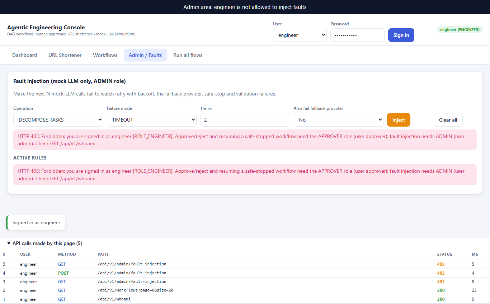
| User | Method | API call | HTTP | ms |
|---|---|---|---|---|
| engineer | GET | /api/v1/whoami | 200 | 5 |
| engineer | GET | /api/v1/workflows?page=0&size=20 | 200 | 23 |
| engineer | GET | /api/v1/admin/fault-injection | 403 | 8 |
| engineer | POST | /api/v1/admin/fault-injection | 403 | 4 |
| engineer | GET | /api/v1/admin/fault-injection | 403 | 5 |
The next two DECOMPOSE_TASKS calls will fail with a timeout.
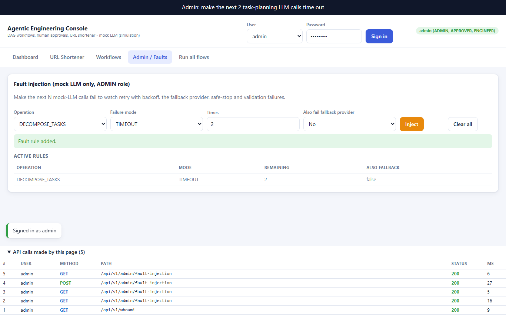
| User | Method | API call | HTTP | ms |
|---|---|---|---|---|
| admin | GET | /api/v1/whoami | 200 | 9 |
| admin | GET | /api/v1/admin/fault-injection | 200 | 16 |
| admin | GET | /api/v1/admin/fault-injection | 200 | 5 |
| admin | POST | /api/v1/admin/fault-injection | 200 | 27 |
| admin | GET | /api/v1/admin/fault-injection | 200 | 6 |
The planning task shows Attempts = 3: two transient failures were retried and the third attempt succeeded.
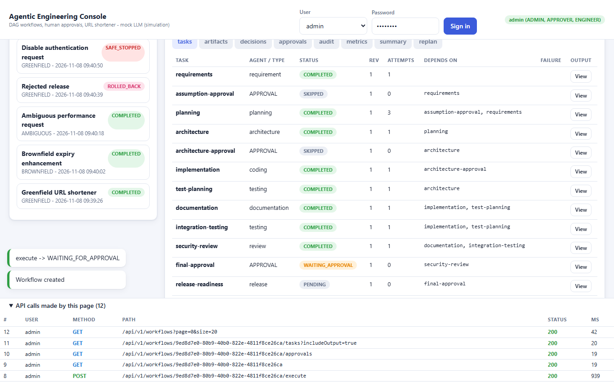
| User | Method | API call | HTTP | ms |
|---|---|---|---|---|
| admin | GET | /api/v1/workflows?page=0&size=20 | 200 | 26 |
| admin | POST | /api/v1/workflows | 201 | 20 |
| admin | GET | /api/v1/workflows?page=0&size=20 | 200 | 23 |
| admin | GET | /api/v1/workflows/9ed8d7e0-80b9-40b0-822e-4811f8ce26ca/approvals | 200 | 11 |
| admin | GET | /api/v1/workflows/9ed8d7e0-80b9-40b0-822e-4811f8ce26ca | 200 | 11 |
| admin | GET | /api/v1/workflows/9ed8d7e0-80b9-40b0-822e-4811f8ce26ca/tasks?includeOutput=true | 200 | 11 |
| admin | GET | /api/v1/workflows?page=0&size=20 | 200 | 30 |
| admin | POST | /api/v1/workflows/9ed8d7e0-80b9-40b0-822e-4811f8ce26ca/execute | 200 | 939 |
| admin | GET | /api/v1/workflows/9ed8d7e0-80b9-40b0-822e-4811f8ce26ca | 200 | 19 |
| admin | GET | /api/v1/workflows/9ed8d7e0-80b9-40b0-822e-4811f8ce26ca/approvals | 200 | 19 |
| admin | GET | /api/v1/workflows/9ed8d7e0-80b9-40b0-822e-4811f8ce26ca/tasks?includeOutput=true | 200 | 20 |
| admin | GET | /api/v1/workflows?page=0&size=20 | 200 | 42 |
TASK_RETRY_SCHEDULED events record each attempt and the backoff (200 ms, then 400 ms).
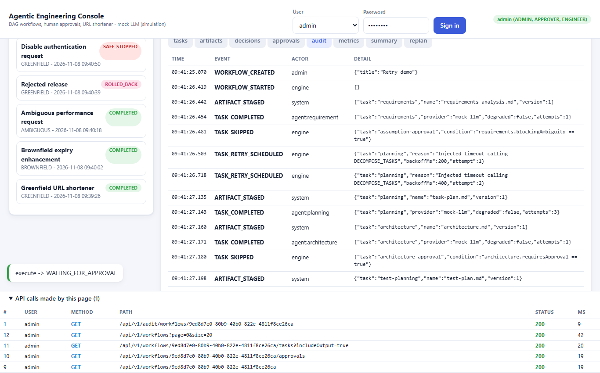
| User | Method | API call | HTTP | ms |
|---|---|---|---|---|
| admin | GET | /api/v1/audit/workflows/9ed8d7e0-80b9-40b0-822e-4811f8ce26ca | 200 | 9 |
POST /replan: only documentation and everything downstream are marked for re-execution; completed upstream work is preserved. No approval is needed for a low-impact change.
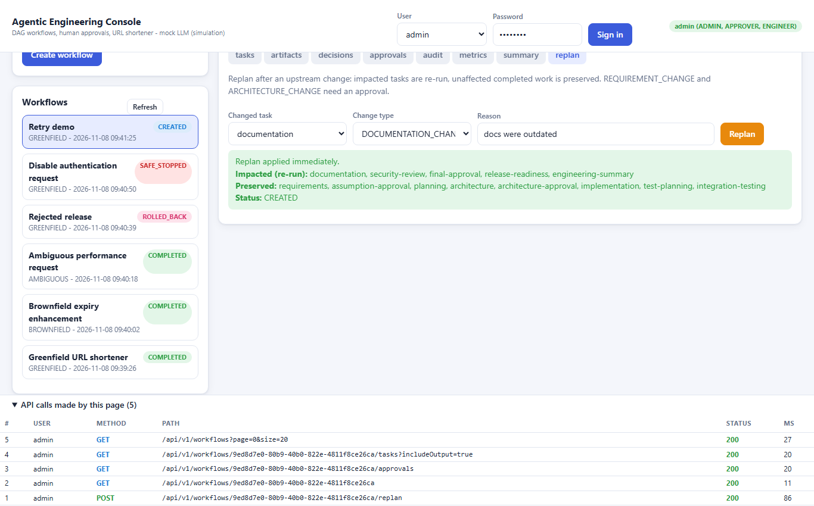
| User | Method | API call | HTTP | ms |
|---|---|---|---|---|
| admin | POST | /api/v1/workflows/9ed8d7e0-80b9-40b0-822e-4811f8ce26ca/replan | 200 | 86 |
| admin | GET | /api/v1/workflows/9ed8d7e0-80b9-40b0-822e-4811f8ce26ca | 200 | 11 |
| admin | GET | /api/v1/workflows/9ed8d7e0-80b9-40b0-822e-4811f8ce26ca/approvals | 200 | 20 |
| admin | GET | /api/v1/workflows/9ed8d7e0-80b9-40b0-822e-4811f8ce26ca/tasks?includeOutput=true | 200 | 20 |
| admin | GET | /api/v1/workflows?page=0&size=20 | 200 | 27 |
The workflow re-ran just the affected tasks (revision 2) and paused again at the final approval.
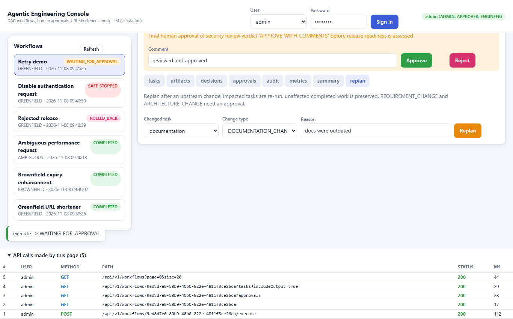
| User | Method | API call | HTTP | ms |
|---|---|---|---|---|
| admin | POST | /api/v1/workflows/9ed8d7e0-80b9-40b0-822e-4811f8ce26ca/execute | 200 | 112 |
| admin | GET | /api/v1/workflows/9ed8d7e0-80b9-40b0-822e-4811f8ce26ca | 200 | 17 |
| admin | GET | /api/v1/workflows/9ed8d7e0-80b9-40b0-822e-4811f8ce26ca/approvals | 200 | 28 |
| admin | GET | /api/v1/workflows/9ed8d7e0-80b9-40b0-822e-4811f8ce26ca/tasks?includeOutput=true | 200 | 29 |
| admin | GET | /api/v1/workflows?page=0&size=20 | 200 | 44 |
Nothing changes until a human approves the proposal; the exact impact (impacted and preserved tasks) is shown for review.
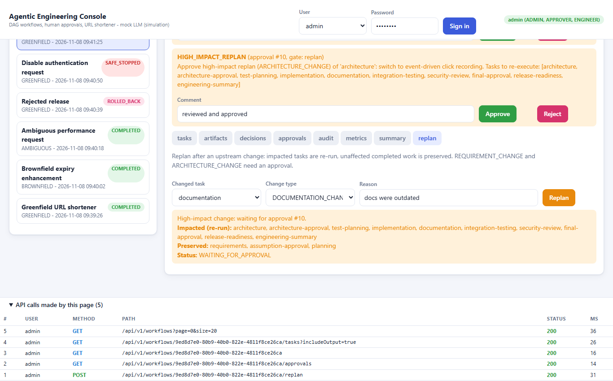
| User | Method | API call | HTTP | ms |
|---|---|---|---|---|
| admin | POST | /api/v1/workflows/9ed8d7e0-80b9-40b0-822e-4811f8ce26ca/replan | 200 | 31 |
| admin | GET | /api/v1/workflows/9ed8d7e0-80b9-40b0-822e-4811f8ce26ca/approvals | 200 | 14 |
| admin | GET | /api/v1/workflows/9ed8d7e0-80b9-40b0-822e-4811f8ce26ca | 200 | 16 |
| admin | GET | /api/v1/workflows/9ed8d7e0-80b9-40b0-822e-4811f8ce26ca/tasks?includeOutput=true | 200 | 26 |
| admin | GET | /api/v1/workflows?page=0&size=20 | 200 | 36 |
After approval the architecture and its dependants re-ran. Earlier decisions are struck through (superseded) but kept for traceability, never silently overwritten.
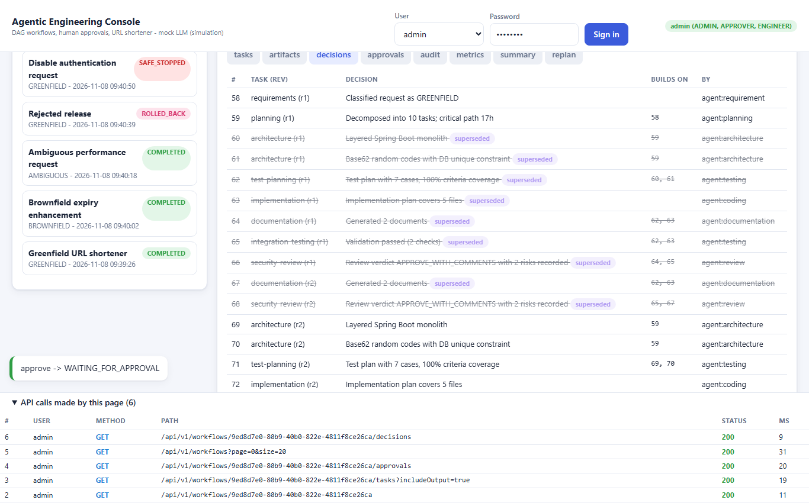
| User | Method | API call | HTTP | ms |
|---|---|---|---|---|
| admin | POST | /api/v1/workflows/9ed8d7e0-80b9-40b0-822e-4811f8ce26ca/approve | 200 | 164 |
| admin | GET | /api/v1/workflows/9ed8d7e0-80b9-40b0-822e-4811f8ce26ca | 200 | 11 |
| admin | GET | /api/v1/workflows/9ed8d7e0-80b9-40b0-822e-4811f8ce26ca/tasks?includeOutput=true | 200 | 19 |
| admin | GET | /api/v1/workflows/9ed8d7e0-80b9-40b0-822e-4811f8ce26ca/approvals | 200 | 20 |
| admin | GET | /api/v1/workflows?page=0&size=20 | 200 | 31 |
| admin | GET | /api/v1/workflows/9ed8d7e0-80b9-40b0-822e-4811f8ce26ca/decisions | 200 | 9 |
architecture now shows revision 2 while requirements and planning remain revision 1 (preserved).
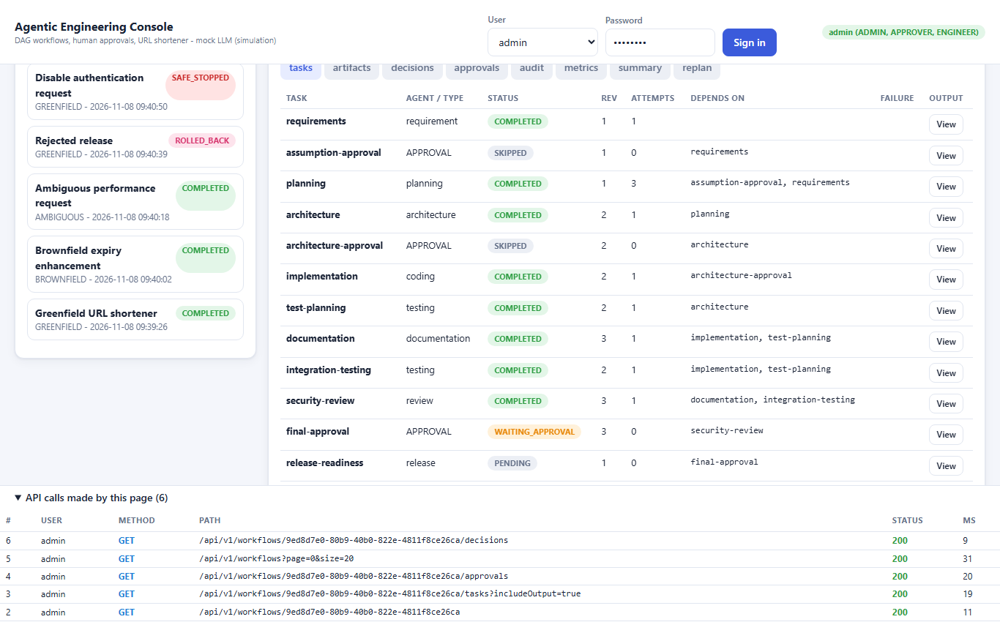
GET /api/v1/metrics/summary: success and failure rate, retries, rollbacks, safe-stops, end-to-end latency, approval wait, task success rate and MTTR, all derived from stored data.
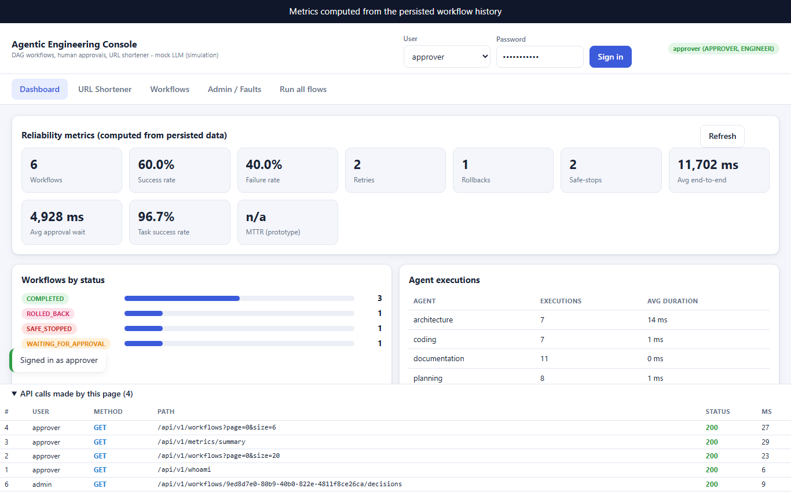
| User | Method | API call | HTTP | ms |
|---|---|---|---|---|
| approver | GET | /api/v1/whoami | 200 | 6 |
| approver | GET | /api/v1/workflows?page=0&size=20 | 200 | 23 |
| approver | GET | /api/v1/metrics/summary | 200 | 29 |
| approver | GET | /api/v1/workflows?page=0&size=6 | 200 | 27 |
One button executes every API flow with the engineer, approver and admin users.
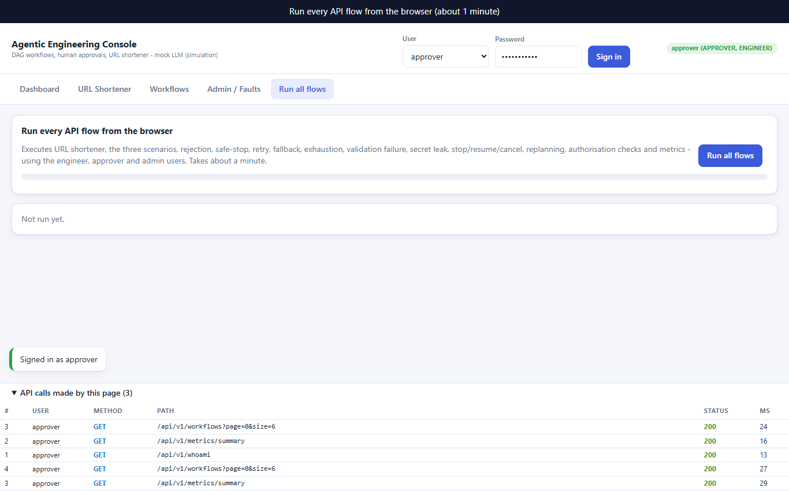
| User | Method | API call | HTTP | ms |
|---|---|---|---|---|
| approver | GET | /api/v1/whoami | 200 | 13 |
| approver | GET | /api/v1/metrics/summary | 200 | 16 |
| approver | GET | /api/v1/workflows?page=0&size=6 | 200 | 24 |
Progress bar and live results while the flows execute.
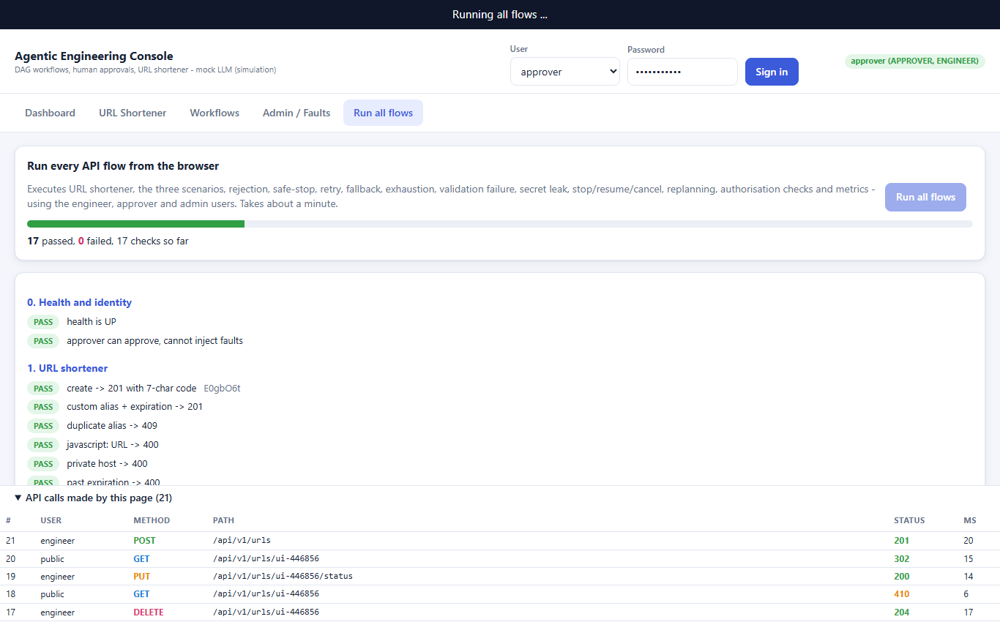
| User | Method | API call | HTTP | ms |
|---|---|---|---|---|
| admin | DELETE | /api/v1/admin/fault-injection | 200 | 8 |
| engineer | GET | /api/v1/health | 200 | 5 |
| approver | GET | /api/v1/whoami | 200 | 7 |
| engineer | POST | /api/v1/urls | 201 | 11 |
| engineer | POST | /api/v1/urls | 201 | 13 |
| engineer | POST | /api/v1/urls | 409 | 11 |
| engineer | POST | /api/v1/urls | 400 | 11 |
| engineer | POST | /api/v1/urls | 400 | 16 |
| engineer | POST | /api/v1/urls | 400 | 16 |
| anonymous | POST | /api/v1/urls | 401 | 0 |
| public | GET | /api/v1/urls/ui-446856 | 302 | 29 |
| public | GET | /api/v1/urls/ui-446856 | 302 | 26 |
| engineer | GET | /api/v1/urls/ui-446856/analytics | 200 | 16 |
| engineer | GET | /api/v1/urls?page=0&size=5 | 200 | 22 |
| engineer | GET | /api/v1/urls/ui-446856/details | 200 | 17 |
| public | GET | /api/v1/urls/nope-nope-x | 404 | 19 |
Every check passed. The page made all of these API calls itself.
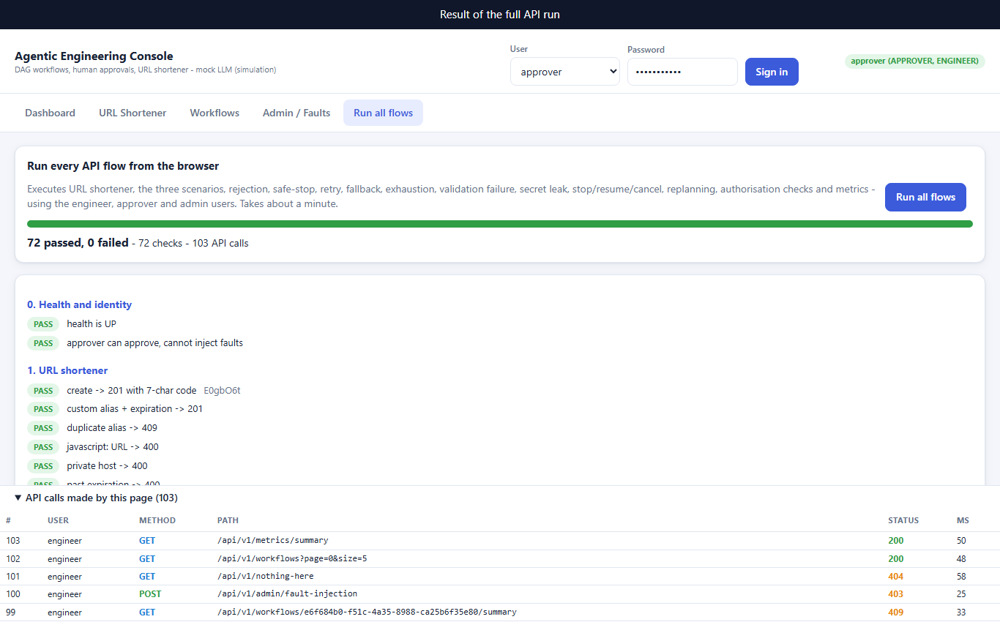
| User | Method | API call | HTTP | ms |
|---|---|---|---|---|
| public | GET | /api/v1/urls/soon-671438 | 410 | 10 |
| engineer | POST | /api/v1/workflows | 201 | 41 |
| engineer | POST | /api/v1/workflows/d2e76920-510c-4c1b-8589-90357af22eb0/execute | 200 | 228 |
| engineer | GET | /api/v1/workflows/d2e76920-510c-4c1b-8589-90357af22eb0/tasks?includeOutput=true | 200 | 10 |
| engineer | GET | /api/v1/workflows/d2e76920-510c-4c1b-8589-90357af22eb0/tasks?includeOutput=true | 200 | 12 |
| engineer | POST | /api/v1/workflows/d2e76920-510c-4c1b-8589-90357af22eb0/approve | 403 | 12 |
| approver | POST | /api/v1/workflows/d2e76920-510c-4c1b-8589-90357af22eb0/approve | 200 | 285 |
| engineer | GET | /api/v1/workflows/d2e76920-510c-4c1b-8589-90357af22eb0/summary | 200 | 17 |
| engineer | GET | /api/v1/workflows/d2e76920-510c-4c1b-8589-90357af22eb0/artifacts | 200 | 10 |
| engineer | GET | /api/v1/workflows/d2e76920-510c-4c1b-8589-90357af22eb0/decisions | 200 | 9 |
| engineer | GET | /api/v1/workflows/d2e76920-510c-4c1b-8589-90357af22eb0/approvals | 200 | 15 |
| engineer | GET | /api/v1/audit/workflows/d2e76920-510c-4c1b-8589-90357af22eb0 | 200 | 14 |
| engineer | GET | /api/v1/metrics/workflows/d2e76920-510c-4c1b-8589-90357af22eb0 | 200 | 20 |
| engineer | POST | /api/v1/workflows | 201 | 136 |
| engineer | POST | /api/v1/workflows/74b3ad5d-8cf0-49be-8d0f-9d281bacbf2d/execute | 200 | 1517 |
| engineer | GET | /api/v1/workflows/74b3ad5d-8cf0-49be-8d0f-9d281bacbf2d/tasks?includeOutput=true | 200 | 25 |
Full list of checks (full-page capture).
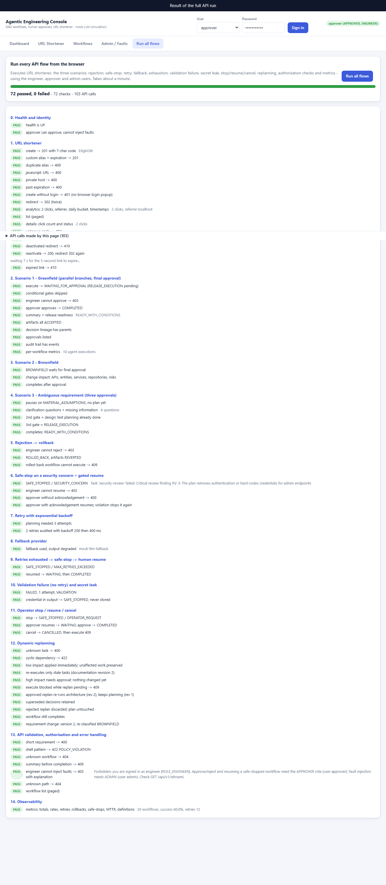
72 passed, 0 failed, 72 checks.
| 0. Health and identity | |
| PASS | health is UP |
| PASS | approver can approve, cannot inject faults |
| 1. URL shortener | |
| PASS | create -> 201 with 7-char code E0gbO6t |
| PASS | custom alias + expiration -> 201 |
| PASS | duplicate alias -> 409 |
| PASS | javascript: URL -> 400 |
| PASS | private host -> 400 |
| PASS | past expiration -> 400 |
| PASS | create without login -> 401 (no browser login popup) |
| PASS | redirect -> 302 (twice) |
| PASS | analytics: 2 clicks, referrer, daily bucket, timestamps 2 clicks, referrer localhost |
| PASS | list (paged) |
| PASS | details: click count and status 2 clicks |
| PASS | unknown code -> 404 |
| PASS | deactivate -> 204 |
| PASS | deactivated redirect -> 410 |
| PASS | reactivate -> 200, redirect 302 again |
| waiting 7 s for the 5-second link to expire... | |
| PASS | expired link -> 410 |
| 2. Scenario 1 - Greenfield (parallel branches, final approval) | |
| PASS | execute -> WAITING_FOR_APPROVAL (RELEASE_EXECUTION pending) |
| PASS | conditional gates skipped |
| PASS | engineer cannot approve -> 403 |
| PASS | approver approves -> COMPLETED |
| PASS | summary + release readiness READY_WITH_CONDITIONS |
| PASS | artifacts all ACCEPTED |
| PASS | decision lineage has parents |
| PASS | approvals listed |
| PASS | audit trail has events |
| PASS | per-workflow metrics 10 agent executions |
| 3. Scenario 2 - Brownfield | |
| PASS | BROWNFIELD waits for final approval |
| PASS | change impact: APIs, entities, services, repositories, risks |
| PASS | completes after approval |
| 4. Scenario 3 - Ambiguous requirement (three approvals) | |
| PASS | pauses on MATERIAL_ASSUMPTIONS, no plan yet |
| PASS | clarification questions + missing information 4 questions |
| PASS | 2nd gate = design; test planning already done |
| PASS | 3rd gate = RELEASE_EXECUTION |
| PASS | completes; READY_WITH_CONDITIONS |
| 5. Rejection -> rollback | |
| PASS | engineer cannot reject -> 403 |
| PASS | ROLLED_BACK, artifacts REVERTED |
| PASS | rolled-back workflow cannot execute -> 409 |
| 6. Safe-stop on a security concern + gated resume | |
| PASS | SAFE_STOPPED / SECURITY_CONCERN Task 'security-review' failed: Critical review finding RV-3: The plan removes authentication or hard-codes credentials for admin endpoints |
| PASS | engineer cannot resume -> 403 |
| PASS | approver without acknowledgement -> 400 |
| PASS | approver with acknowledgement resumes; violation stops it again |
| 7. Retry with exponential backoff | |
| PASS | planning needed 3 attempts |
| PASS | 2 retries audited with backoff 200 then 400 ms |
| 8. Fallback provider | |
| PASS | fallback used, output degraded mock-llm-fallback |
| 9. Retries exhausted -> safe-stop -> human resume | |
| PASS | SAFE_STOPPED / MAX_RETRIES_EXCEEDED |
| PASS | resumed -> WAITING, then COMPLETED |
| 10. Validation failure (no retry) and secret leak | |
| PASS | FAILED, 1 attempt, VALIDATION |
| PASS | credential in output -> SAFE_STOPPED, never stored |
| 11. Operator stop / resume / cancel | |
| PASS | stop -> SAFE_STOPPED / OPERATOR_REQUEST |
| PASS | approver resumes -> WAITING; approve -> COMPLETED |
| PASS | cancel -> CANCELLED, then execute 409 |
| 12. Dynamic replanning | |
| PASS | unknown task -> 400 |
| PASS | cyclic dependency -> 422 |
| PASS | low impact applied immediately; unaffected work preserved |
| PASS | re-executes only stale tasks (documentation revision 2) |
| PASS | high impact needs approval; nothing changed yet |
| PASS | execute blocked while replan pending -> 409 |
| PASS | approved replan re-runs architecture (rev 2), keeps planning (rev 1) |
| PASS | superseded decisions retained |
| PASS | rejected replan discarded; plan untouched |
| PASS | workflow still completes |
| PASS | requirement change: version 2, re-classified BROWNFIELD |
| 13. API validation, authorisation and error handling | |
| PASS | short requirement -> 400 |
| PASS | shell pattern -> 422 POLICY_VIOLATION |
| PASS | unknown workflow -> 404 |
| PASS | summary before completion -> 409 |
| PASS | engineer cannot inject faults -> 403 with explanation Forbidden: you are signed in as engineer [ROLE_ENGINEER]. Approve/reject and resuming a safe-stopped workflow need the APPROVER role (user approver); fault injection needs ADMIN (user admin). Check GET /api/v1/whoami. |
| PASS | unknown path -> 404 |
| PASS | workflow list (paged) |
| 14. Observability | |
| PASS | metrics: totals, rates, retries, rollbacks, safe-stops, MTTR, definitions 20 workflows, success 60.0%, retries 12 |
Endpoints are read from the application's own OpenAPI document and matched against the calls the browser made.
| Method | Endpoint | Calls | HTTP statuses seen | Covered |
|---|---|---|---|---|
| DELETE | /api/v1/admin/fault-injection | 5 | 200 | yes |
| GET | /api/v1/admin/fault-injection | 5 | 200, 403 | yes |
| POST | /api/v1/admin/fault-injection | 8 | 200, 403 | yes |
| GET | /api/v1/audit/workflows/{workflowId} | 4 | 200 | yes |
| GET | /api/v1/health | 1 | 200 | yes |
| GET | /api/v1/metrics/summary | 4 | 200 | yes |
| GET | /api/v1/metrics/workflows/{workflowId} | 2 | 200 | yes |
| GET | /api/v1/urls | 7 | 200 | yes |
| POST | /api/v1/urls | 9 | 201, 400, 401, 409 | yes |
| DELETE | /api/v1/urls/{shortCode} | 2 | 204 | yes |
| GET | /api/v1/urls/{shortCode} | 12 | 302, 404, 410 | yes |
| GET | /api/v1/urls/{shortCode}/analytics | 2 | 200 | yes |
| GET | /api/v1/urls/{shortCode}/details | 1 | 200 | yes |
| PUT | /api/v1/urls/{shortCode}/status | 2 | 200 | yes |
| GET | /api/v1/whoami | 9 | 200 | yes |
| GET | /api/v1/workflows | 50 | 200 | yes |
| POST | /api/v1/workflows | 22 | 201, 400, 422 | yes |
| GET | /api/v1/workflows/{id} | 30 | 200, 404 | yes |
| GET | /api/v1/workflows/{id}/approvals | 30 | 200 | yes |
| POST | /api/v1/workflows/{id}/approve | 20 | 200, 403 | yes |
| GET | /api/v1/workflows/{id}/artifacts | 5 | 200 | yes |
| POST | /api/v1/workflows/{id}/cancel | 1 | 200 | yes |
| GET | /api/v1/workflows/{id}/decisions | 4 | 200 | yes |
| POST | /api/v1/workflows/{id}/execute | 30 | 200, 400, 403, 409 | yes |
| POST | /api/v1/workflows/{id}/reject | 4 | 200, 403 | yes |
| POST | /api/v1/workflows/{id}/replan | 8 | 200, 400, 422 | yes |
| POST | /api/v1/workflows/{id}/stop | 1 | 200 | yes |
| GET | /api/v1/workflows/{id}/summary | 3 | 200, 409 | yes |
| GET | /api/v1/workflows/{id}/tasks | 46 | 200 | yes |